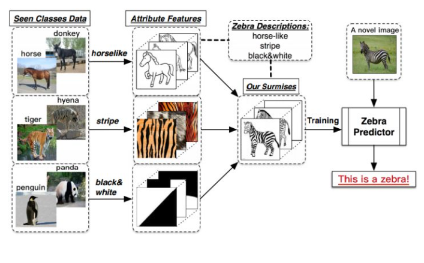

金融行业动态方向评估项目介绍¶
学习目标¶
- 了解项目背景
- 了解整体项目任务
- 掌握Few-shot、Zero-shot的思想
- 完成课前环境搭配
1 项目背景¶
- 当前金融领域信息化发展的时代,金融数据大量激增,许多投资者和研究者试图通过对这些数据进行深度分析而获得一些有效的决策和帮助,尽可能减少决策失误带来的损失。所以,针对金融数据的分析方法研究是目前十分有益且热门的话题。
- 近年来，随着科技的进步，人工智能技术在各行业中的应用越来越广泛，而金融领域也不例外。人工智能技术的应用可以为金融企业提供更高效、精准的服务，也可以帮助投资者更好的地进行投资决策。
- 当前人工智能技术在金融行业动态分析领域的应用主要包括：
- 风险评估：通过AI对大数据分析，识别出不同金融风险事件类型、反欺诈行为、信用评分低等风险，帮助金融机构全面评估贷款人的信用状况，从而提高贷款的准确性和风险控制能力。
- 投资决策：通过AI技术对历史数据、财务报表等信息分析，为投资者提供精准的投资决策支持。
- 客户服务：通过AI技术，实现智能客服等功能，进而为客户提供便捷而又准确的答案
- 但是，上述传统应用的实现，通常需要专业的AI技术加持如：NLP、CV、机器学习等知识，对应的就需要专业的算法人员去分析数据、训练模型从实现预测分析。而这对于非专业人员来说要想实现上述应用，可谓是举步维艰。
- 然而，伴随着ChatGPT等大模型问世，使得非专业人员实现上述应用成为可能，应用者不需要特别专业的算法知识，就可以利用大模型来实现金融领域的应用。
- 因此，本项目主要基于大模型来直接实现在金融领域相关任务的应用。重点在于如何对大模型设计prompt，从而激发大模型的"涌现能力"，进而给出准确的答案。
2 项目任务与方法介绍¶
- 项目任务（三大业务场景）：
- 金融文本分类
- 金融文本信息抽取
- 金融文本匹配
- 大模型选择：ChatGLM-6B
- 采用方法：基于Few-Shot+Zero-Shot以及Instrunction的思想，设计prompt, 进而应用ChatGLM-6B模型完成相应的任务
注意，本项目主要以金融领域的文本进行分析，但是该思想同样适用于其他场景数据。
3 Zero-shot/Few-shot回顾¶
3.1 Zero-shot¶
-
Zero-shot学习（Zero-shot Learning）是指在训练阶段不存在与测试阶段完全相同的类别，但是模型可以使用训练过的知识来推广到测试集中的新类别上。这种能力被称为“零样本”学习，因为模型在训练时从未见过测试集中的新类别.
-
深入挖掘Zero-shot思想：
-
举例：
-
有一天，小明和爸爸一块去动物园，看到了马，然后爸爸告诉他，这就是马；之后，又看到了老虎，告诉他：“看，这种身上有条纹的动物就是老虎。”；最后，又带他去看了熊猫，对他说：“你看这熊猫是黑白色的。”然后，爸爸给小明提了个问题，让他在动物园里找一种他从没见过的动物，叫斑马，并告诉了小明有关于斑马的信息：“斑马有着马的轮廓，身上有像老虎一样的条纹，而且它像熊猫一样是黑白色的。”最后，小明根据爸爸的提示，在动物园里找到了斑马（意料之中的结局。。。）。
- 上述例子中包含了一个人类的推理过程，就是利用过去的知识（马，老虎，熊猫和斑马的描述），在脑海中推理出新对象的具体形态，从而能对新对象进行辨认。（如图1所示）ZSL就是希望能够模仿人类的这个推理过程，使得计算机具有识别新事物的能力。

- 目前，在深度学习中，很多任务在纯监督任务学习上都达到了让人惊叹的结果，但是其限制是：需要更多的样本才能训练出足够好的模型，并且利用"猫鼠"训练出来的分类器，只能对"猫鼠"进行分类，其他物种无法识别。显然这样的模型不符合人工智能的终极目标。ZSL就是希望模型能够对其从没见过的类别进行分类，让机器具有推理能力，实现真正的智能。
- 那么针对模型零次学习情况下就能准确识别出类别，如何实现呢？假设现在模型已经能够识别马，老虎和熊猫了，那么如果想让它识别斑马，那么我们就需要扮演"爸爸"的角色，告诉模型什么样的对象才是斑马，但是前提是模型从未"看见"斑马。所以模型需要知道的信息是马的样本、老虎的样本、熊猫的样本和样本的标签，以及关于前三种动物和斑马的描述。将其转换为常规的机器学习，这里我们只讨论一般的图片分类问题：
- 1、训练集数据x1及其标签 y1，包含了模型需要学习的类别（马、老虎和熊猫），这里和传统的监督学习中的定义一致；
- 2、测试集数据 x2 及其标签 y2 ，包含了模型需要辨识的类别（斑马），这里和传统的监督学习中也定义一致；
- 3、训练集类别的描述 A1 ，以及测试集类别的描述A2；我们将每一个类别y1∈Y，都表示成一个语义向量 ai∈A 的形式，而这个语义向量的每一个维度都表示一种高级的属性，比如“黑白色”、“有尾巴”、“有羽毛”等等，当这个类别包含这种属性时，那在其维度上被设置为非零值。对于一个数据集来说，语义向量的维度是固定的，它包含了能够较充分描述数据集中类别的属性。
- 在ZSL中，我们希望利用 x1 和 y1 来训练模型，而模型能够具有识别x2 的能力，因此模型需要知道所有类别的描述 A1和 A2 。ZSL这样的设置其实就是上文中小明识别斑马的过程中，爸爸为他提供的条件。
3.2 Few-shot¶
- Few-shot学习（Few-shot Learning）是指少样本学习，当模型在学习了一定类别的大量数据后，对于新的类别，只需要少量的样本就能快速学习，对应的有one-shot learning，单样本学习，也算样本少到为一的情况下的一种few-shot learning,。
- Few-shot相比Zero-shot，表现效果更好，以及泛化性能更好。
4 环境准备¶
本项目运行前请安装相关依赖包：
- protobuf>=3.19.5,<3.20.1
- transformers>=4.26.1
- icetk
- cpm_kernels
- streamlit==1.17.0
小结总结¶
本章节主要介绍了项目开发的背景及意义，回顾了Zero-shot/Few-shot学习方式，并说明了课程依赖环境。